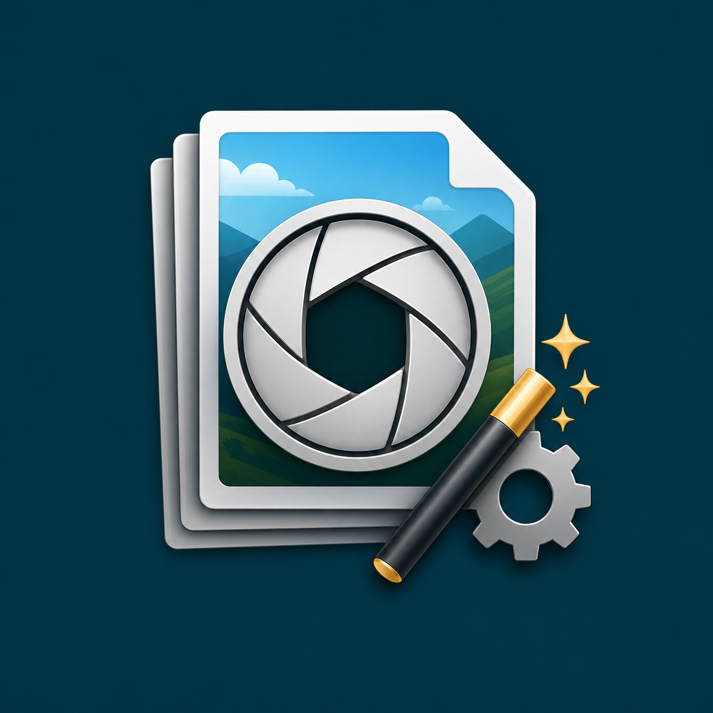

1. Create XMP In Photoshop
Open one Canon CR2/RAW file in Photoshop, adjust it in Camera Raw, and save the settings as an XMP file.

For photographers who prepare one Adobe Camera Raw / Photoshop XMP preset, batch-render many Canon CR2 or other RAW files to JPG, review them, delete unwanted files from Out, and optionally run ONNX AI postprocess on selected frames.
Open one Canon CR2/RAW file in Photoshop, adjust it in Camera Raw, and save the settings as an XMP file.
Start the app, keep Photoshop running, add RAW files, select the saved XMP preset, and render the whole batch to JPG in Out.
Open the Review tab, zoom with the mouse wheel, drag the image in preview, and delete unwanted JPG files from Out.
Load ONNX models from the models folder, choose a profile such as NAFNet-GoPro or NAFNet-REDS, and batch-process selected JPG files.
CR2 + XMP -> JPG rendering through the Adobe engine.
code signing certificate yet, not that the app is dangerous. If you downloaded it from this project page or the GitHub repository, you can compare the source code and release files before running it.
CR2RawBatchStudio.exe from the ZIP package.Render.This app is made for photographers who already work in Adobe Photoshop / Camera Raw and want to apply one prepared RAW look to many files.
XMP preset or sidecar file.CR2RawBatchStudio.exe.XMP file in the XMP preset field.Out folder for rendered JPG files.Render. The app uses Photoshop to render RAW to JPG.Review tab and sort the JPG output.Out.Программа сделана для фотографов, которые уже работают в Adobe Photoshop / Camera Raw и хотят применить один подготовленный RAW-пресет сразу ко многим файлам.
XMP или sidecar-файл.CR2RawBatchStudio.exe.XMP preset выберите этот сохранённый XMP-файл.Out для готовых JPG.Render. Программа использует Photoshop для рендера RAW в JPG.Review и отсортируйте полученные JPG.Out.Step 3 reads JPG files from the Out folder, lets you mark which files should be processed, and applies one selected ONNX model to the checked files.
models\<ModelName>\..onnx file and optional manifest.json.NAFNet-GoPro is suited for blur removal on motion-blurred frames.NAFNet-REDS is a more general restoration profile.Out.Шаг 3 читает JPG-файлы из папки Out, позволяет отметить, какие файлы нужно обработать, и применяет одну выбранную ONNX-модель к отмеченным файлам.
models\<ModelName>\..onnx и, при необходимости, manifest.json.NAFNet-GoPro — профиль для удаления размытия.NAFNet-REDS — более универсальный профиль восстановления.Out.